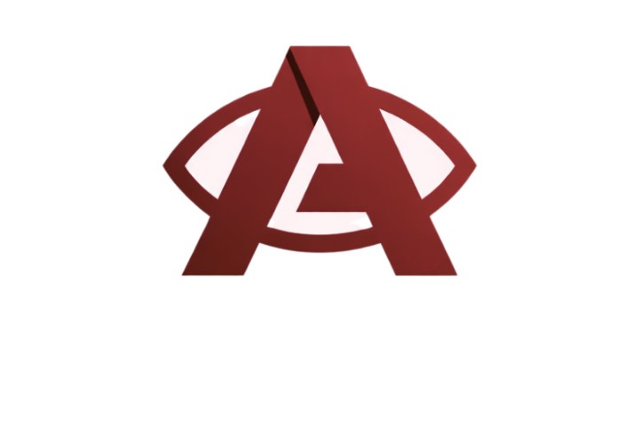

Mount this phone facing the patient's eyes. Aim with the preview, then tap Start Streaming and type the code on the controller.
Tap Start Streaming and allow the camera. On the controller choose "Phone Camera" and enter the code shown above. Works on the same WiFi or any other network. Keep this page open and the phone plugged in.